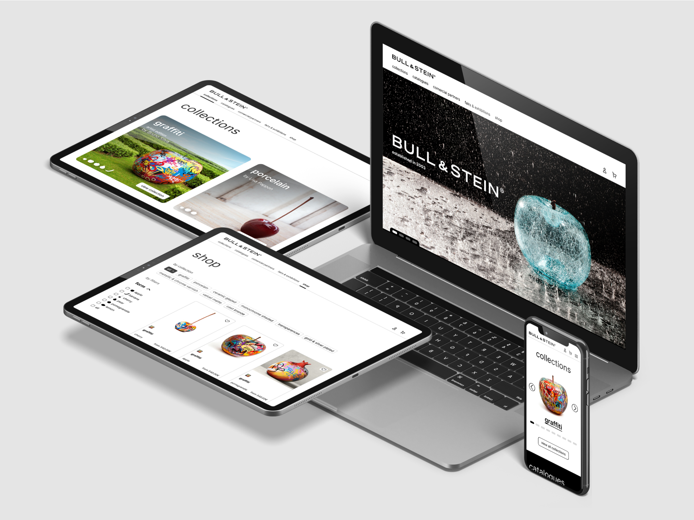

BULL & STEIN
May 2024 – November 2024
BULL & STEIN is an art gallery established in 2003, renowned for its extravagant fruit sculpture collections. Their website and online store were redesigned to enhance the user experience, focusing on simplifying the browsing and shopping journey for their unique fruit collections. The image presented is a sneak peek of the redesign, as the website is currently under development and will be launched soon.
- Interaction
Freelance Project
4Humanz
Co-Authors
Design Tools
- Figma |
- Adobe Photoshop
